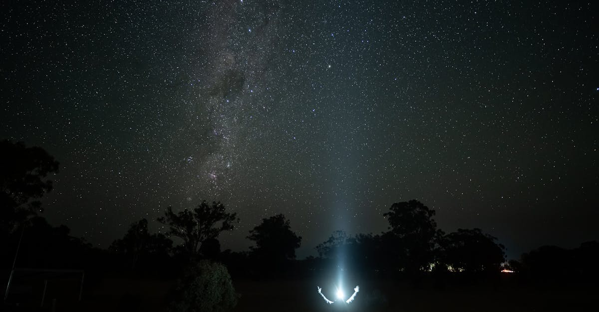
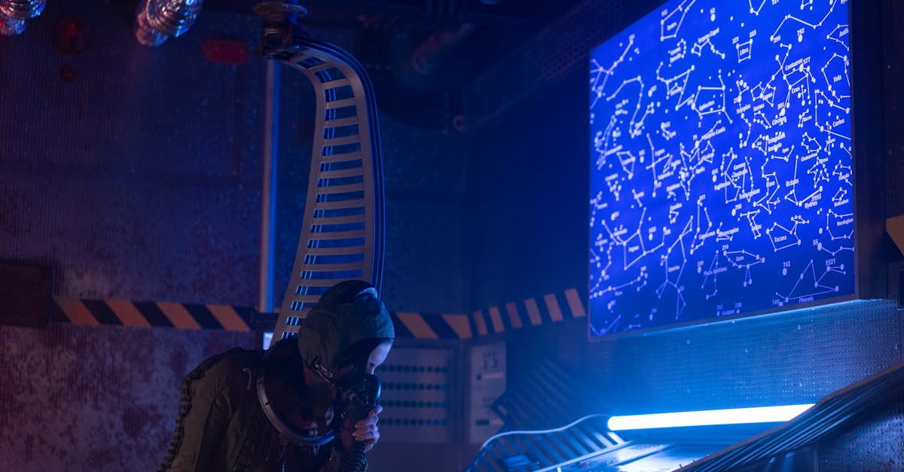

Le plus grand cluster de calcul orbital est ouvert aux entreprises
Le 13 avril 2026, TechCrunch a rapporté une nouvelle qui marque un tournant dans l'histoire de l'informatique et de l'exploration spatiale. Kepler Communications, entreprise canadienne basée a Toronto et spécialisée dans les communications par satellite, a officiellement annoncé que son cluster de 40 GPU en orbite terrestre basse est pleinement opérationnel et ouvert aux clients commerciaux. Il s'agit du plus grand ensemble de processeurs graphiques jamais deployé dans l'espace, et il est désormais accessible a quiconque souhaite exécuter des charges de travail d'intelligence artificielle directement en orbite.
Sophia Space, startup franco-européenne spécialisée dans l'analyse avancée de données d'observation terrestre, est le tout premier client a exploiter cette infrastructure. Ce partenariat inaugural illustre parfaitement le type de cas d'usage qui rend le calcul orbital non seulement viable, mais potentiellement indispensable pour toute une génération d'applications spatiales.
Pour les acteurs de l'intelligence artificielle et du NewSpace, cette annonce n'est pas un simple fait divers technologique. C'est le signal que l'informatique spatiale entre dans une phase de commercialisation active, avec des implications profondes pour le traitement de données, la surveillance planétaire et l'autonomie des systèmes spatiaux.
Kepler Communications : du réseau satellite au calcul orbital
Fondée en 2015, Kepler Communications s'est d'abord fait connaître pour ses services de connectivité en orbite basse. L'entreprise opère une constellation de nanosatellites fournissant des liaisons de données a d'autres satellites, un service parfois décrit comme le Wi-Fi de l'espace. Avec plus de 200 millions de dollars levés auprès d'investisseurs incluant Costanoa Ventures et IA Capital Group, Kepler a progressivement élargi sa vision au-dela de la simple connectivité.
Le pivot vers le calcul orbital s'est concrétisé en 2024, quand l'entreprise a commencé a intégrer des modules de calcul GPU dans ses satellites de nouvelle génération. Le cluster annoncé aujourd'hui comprend 40 GPU de classe data center, répartis sur plusieurs satellites en orbite basse (entre 500 et 600 km d'altitude). Chaque module embarque des processeurs spécifiquement adaptés a l'environnement spatial, couplés a une mémoire haute bande passante et a des systèmes de stockage SSD tolérants aux radiations.
La puissance de calcul combinée du cluster est estimée a environ 2 pétaflops en précision mixte, suffisante pour exécuter des modèles d'inférence IA de taille moyenne, du traitement d'images par réseaux de neurones convolutifs et de la détection d'objets en temps réel. Il ne s'agit pas d'entraîner GPT-5 en orbite, mais plutôt de déployer des modèles déja entraînés la ou les données sont générées.
Le problème fondamental : trop de données, pas assez de bande passante
Pour comprendre pourquoi envoyer des GPU dans l'espace a du sens, il faut saisir l'ampleur du goulot d'étranglement qui paralyse l'industrie de l'observation terrestre.
L'explosion des données satellite
Les satellites d'observation de dernière génération produisent des volumes de données colossaux. Un seul satellite radar a synthèse d'ouverture (SAR) peut générer plusieurs téraoctets de données brutes par jour. Multipliez cela par les centaines de satellites d'observation actuellement en orbite, et vous obtenez un flux de données qui dépasse largement la capacité de téléchargement vers le sol.
Le processus traditionnel fonctionne ainsi :
- Le satellite capture des images ou des mesures en survolant une zone d'intérêt
- Les données brutes sont stockées a bord en attendant un passage au-dessus d'une station au sol
- Le téléchargement (downlink) s'effectue pendant une fenêtre de quelques minutes, a un débit limité
- Les données sont transférées vers un data center terrestre pour traitement
- Les algorithmes d'IA analysent les données et produisent des résultats exploitables
- Les résultats sont finalement livrés au client final
De bout en bout, ce processus prend typiquement entre 4 et 24 heures, et peut s'étendre a plusieurs jours pour les constellations les plus encombrées. Pour des applications critiques comme la détection de feux de forêt, le suivi de marées noires ou la surveillance de zones de conflit, ce délai est tout simplement inacceptable.

Le calcul orbital comme solution
Avec des GPU embarqués en orbite, le paradigme change radicalement. Au lieu de télécharger l'intégralité des données brutes vers le sol, le satellite exécute les algorithmes d'IA directement a bord. Seuls les résultats pertinents sont transmis : une alerte de détection d'incendie, les coordonnées d'un navire suspect, un indice de stress hydrique pour une parcelle agricole. Cette approche offre trois avantages majeurs :
- Réduction de la latence : le temps de réponse passe de plusieurs heures a quelques minutes, voire quelques secondes pour les alertes prioritaires
- Économie de bande passante : le volume de données transmises au sol peut être réduit de 90 a 99%, libérant la capacité de downlink pour d'autres usages
- Traitement en continu : le satellite n'a plus besoin d'attendre un passage au-dessus d'une station sol pour que ses données soient exploitées
Sophia Space : le premier client et ses cas d'usage
Le choix de Sophia Space comme client inaugural n'est pas anodin. Cette startup européenne, fondée en 2022, développe des plateformes d'analyse de données satellite pour des clients gouvernementaux et commerciaux. Leur expertise couvre un large spectre d'applications qui bénéficient toutes d'un traitement plus rapide et plus proche de la source.
Agriculture de précision
L'analyse en temps quasi réel des images multispectrales permet de détecter le stress hydrique, les infestations parasitaires et les carences nutritionnelles des cultures plusieurs jours avant qu'elles ne deviennent visibles a l'oeil nu. Pour un exploitant agricole, chaque jour gagné peut représenter des économies considérables en intrants et une meilleure productivité.
Surveillance maritime
La détection automatique de navires par IA, combinée a la corrélation avec les données AIS (système d'identification automatique), permet d'identifier en temps réel les activités de pêche illégale, les violations de zones économiques exclusives et les comportements suspects. Le traitement orbital réduit le délai d'alerte de plusieurs heures a quelques minutes.
Monitoring environnemental
Le suivi de la déforestation, des émissions de méthane, de la qualité de l'air et de l'évolution des glaciers nécessite un traitement continu de vastes quantités de données satellite. Le calcul orbital permet un monitoring quasi permanent sans saturer les liaisons de communication.
Applications de défense et sécurité
Bien que Sophia Space reste discret sur ce segment, les applications de renseignement géospatial (GEOINT) représentent un marché considérable. La capacité a détecter et caractériser des changements au sol en temps quasi réel transforme la surveillance stratégique.

Les défis techniques du calcul en orbite
Faire fonctionner des GPU haute performance dans l'espace est un exploit d'ingénierie. L'environnement orbital est fondamentalement hostile a l'électronique de pointe, et chaque composant doit être repensé pour survivre et fonctionner dans ces conditions extrêmes.
Radiations cosmiques : l'ennemi invisible
En orbite basse, les processeurs sont exposés a un bombardement constant de particules cosmiques et de protons solaires. Ces particules peuvent provoquer des erreurs de bits individuels (single-event upsets, ou SEU) dans la mémoire et les registres des processeurs. Plus grave encore, des événements de latch-up peuvent endommager définitivement les circuits. Les GPU commerciaux standard, conçus pour fonctionner dans l'atmosphère protectrice de la Terre, ne survivraient que quelques semaines en orbite sans protection.
Gestion thermique sans atmosphère
Sur Terre, les GPU sont refroidis par ventilation forcée ou par liquide. Dans le vide spatial, il n'y a pas de convection. La seule méthode de dissipation thermique est le rayonnement infrarouge. De plus, les satellites subissent des cycles thermiques extrêmes, passant de -170 degrés Celsius dans l'ombre de la Terre a +120 degrés au soleil direct, et ce toutes les 90 minutes pour un satellite en orbite basse.
Contraintes énergétiques
Un GPU de data center consomme typiquement entre 300 et 700 watts. Un satellite de taille moyenne dispose d'environ 1 a 3 kilowatts de puissance solaire totale, qui doit alimenter toute l'avionique, les communications, le contrôle d'attitude et les charges utiles scientifiques. Chaque watt alloué au calcul GPU est un watt retiré a un autre sous-système critique.
Les innovations techniques de Kepler
Pour surmonter ces obstacles, l'équipe d'ingénierie de Kepler a développé un ensemble de solutions propriétaires qui représentent plusieurs années de recherche et développement.
GPU radiation-hardened de nouvelle génération
Kepler utilise des processeurs graphiques spécifiquement modifiés pour l'environnement spatial. Ces GPU intègrent des mécanismes de correction d'erreurs multicouches : ECC (Error Correcting Code) sur toutes les mémoires, redondance triple pour les registres critiques et checkpointing automatique permettant de reprendre un calcul interrompu par un événement radiatif. Les performances sont environ 60% de celles d'un GPU commercial équivalent, un compromis nécessaire pour la fiabilité.
Refroidissement passif par radiateurs spatiaux
Le système de gestion thermique de Kepler repose sur des radiateurs passifs a haute émissivité couplés a des caloducs (heat pipes) en boucle. La chaleur générée par les GPU est acheminée vers des panneaux radiatifs orientés vers l'espace profond, ou elle est dissipée par rayonnement infrarouge. Ce système ne comporte aucune pièce mobile, éliminant un point de défaillance courant dans les systèmes spatiaux.
Gestion énergétique par IA embarquée
L'un des aspects les plus élégants du système est que l'IA gère sa propre consommation d'énergie. Un système de gestion intelligent ajuste dynamiquement la fréquence des GPU, la priorité des tâches et l'allocation de puissance en fonction de la position orbitale (ensoleillement), de l'état des batteries et de la criticité des charges de travail en file d'attente. Quand le satellite passe dans l'ombre de la Terre, la puissance de calcul est automatiquement réduite pour préserver les batteries.

Un marché en pleine explosion
Le calcul orbital IA n'est pas un projet de laboratoire. C'est un marché émergent qui attire des investissements massifs et dont la trajectoire de croissance impressionne les analystes.
Projections de marché
Selon les estimations convergentes de Morgan Stanley, Northern Sky Research et Euroconsult, le marché du edge computing spatial devrait connaître une croissance exceptionnelle :
- 2 milliards de dollars d'ici 2028, porté par les premiers déploiements commerciaux comme celui de Kepler
- 8 milliards de dollars d'ici 2032, a mesure que les constellations de calcul orbital se densifient
- Un taux de croissance annuel composé (CAGR) supérieur a 50%, ce qui en fait l'un des segments les plus dynamiques de l'économie spatiale
Ces projections tiennent compte de la baisse continue des coûts de lancement, avec SpaceX qui a réduit le prix du kilogramme en orbite de plus de 90% en une décennie, et de la maturation des technologies de calcul spatial.
Les concurrents et l'écosystème
Kepler n'opère pas en vase clos. Plusieurs acteurs majeurs se positionnent sur ce marché, chacun avec une approche différente :
- Microsoft Azure Orbital : le géant du cloud propose une plateforme intégrée connectant ses services Azure aux données satellite. Leur approche reste principalement terrestre, avec du calcul au sol, mais ils investissent dans des partenariats pour le traitement en orbite
- AWS Ground Station : Amazon offre une infrastructure de stations sol en tant que service, facilitant le téléchargement de données satellite vers le cloud AWS. Comme Microsoft, leur stratégie évolue vers le calcul plus proche de la source
- OrbitsEdge : cette startup américaine développe des micro data centers spatiaux (SatFrame) conçus pour être intégrés dans des satellites existants. Leur approche modulaire permet a n'importe quel opérateur satellite d'ajouter du calcul a ses missions
- Loft Orbital : basée a San Francisco et Toulouse, Loft propose un modèle de satellite-as-a-service ou plusieurs clients partagent un même véhicule spatial avec des capacités de calcul embarquées
La compétition est saine et stimule l'innovation. Mais Kepler possède un avantage de premier entrant significatif avec le plus grand cluster opérationnel en orbite et un premier client commercial actif.
Implications pour l'intelligence artificielle
Le calcul orbital ne se limite pas au traitement d'images satellite. Il ouvre des perspectives fondamentalement nouvelles pour l'IA dans son ensemble.
Vers des satellites pleinement autonomes
Équipés de GPU et de modèles d'IA embarqués, les satellites de nouvelle génération peuvent prendre des décisions autonomes sans attendre d'instructions du sol. Un satellite d'observation pourrait détecter un événement imprévu, comme un début d'éruption volcanique ou un mouvement militaire inhabituel, décider de manière autonome de modifier son attitude pour capturer des images supplémentaires et alerter immédiatement les opérateurs au sol. Cette autonomie est rendue possible par l'IA embarquée et transforme fondamentalement le concept d'opérations satellite.
Routage intelligent du trafic spatial
Les méga-constellations comme Starlink, OneWeb ou Kuiper comptent des milliers de satellites qui doivent router le trafic internet de manière optimale. Des modèles d'IA embarqués pourraient optimiser le routage en temps réel, en tenant compte de la charge de chaque satellite, des conditions atmosphériques affectant les liaisons laser et de la demande géographique. Le résultat serait un internet spatial plus rapide et plus résilient.
Préparation aux missions lointaines
Pour les missions vers Mars, la communication avec la Terre prend entre 4 et 24 minutes selon les positions orbitales. Un rover ou une station martienne ne peut pas attendre une demi-heure pour chaque décision. L'IA embarquée avec une puissance de calcul suffisante est absolument indispensable pour la navigation autonome, l'analyse scientifique en temps réel et la gestion de situations d'urgence. Le cluster orbital de Kepler sert de banc d'essai pour ces technologies qui seront critiques dans l'exploration du système solaire.
L'angle investissement : convergence NewSpace et IA
Pour les investisseurs et les analystes, le calcul orbital IA représente une convergence rare entre deux des mégatendances les plus puissantes de la décennie : le NewSpace et l'intelligence artificielle. Cette intersection crée des opportunités d'investissement spécifiques.
Les segments a surveiller
- Opérateurs de calcul orbital : Kepler Communications, OrbitsEdge, Loft Orbital et les futurs entrants représentent le coeur du marché. Les levées de fonds dans ce segment se multiplient
- Fabricants de puces radiation-hardened : des entreprises comme Microchip Technology, BAE Systems et plusieurs startups développent des processeurs spatiaux de nouvelle génération. Ce marché de niche connaît une croissance soutenue, tirée par la demande des constellations commerciales
- Éditeurs de logiciels IA spatial : les entreprises qui développent des modèles d'IA optimisés pour l'inférence embarquée dans des environnements contraints (faible puissance, haute fiabilité) sont stratégiquement positionnées
- Opérateurs de données satellite : les clients finaux du calcul orbital comme Sophia Space, Planet Labs, Maxar et Capella Space verront leur proposition de valeur démultipliée par le traitement en orbite
Le contexte macroéconomique favorable
Le timing est remarquable. Les coûts de lancement continuent de baisser, la demande en données satellite explose dans tous les secteurs (agriculture, énergie, assurance, finance, défense) et les modèles d'IA deviennent suffisamment compacts pour fonctionner sur du matériel embarqué. Ces trois tendances convergent pour rendre le calcul orbital économiquement rationnel pour la première fois.
La démocratisation du calcul spatial
L'un des aspects les plus significatifs de l'annonce de Kepler est le modèle commercial adopté. Plutôt que de vendre des satellites dédiés, Kepler propose le calcul orbital en tant que service (Orbital Computing as a Service, ou OCaaS). N'importe quelle entreprise peut soumettre une charge de travail IA au cluster orbital de Kepler, sans avoir besoin de posséder ou d'opérer son propre satellite.
Ce modèle abaisse considérablement la barrière a l'entrée. Une startup de dix personnes peut désormais accéder a du calcul IA en orbite avec le même niveau de service qu'une agence spatiale nationale. C'est l'équivalent spatial de ce que le cloud computing a fait pour les data centers terrestres dans les années 2010 : transformer un investissement en capital massif en un service a la demande.
Kepler envisage d'étendre son cluster a 200 GPU d'ici fin 2027 et a plus de 1 000 GPU d'ici 2030, créant un véritable cloud distribué en orbite basse. L'entreprise développe également une API standardisée permettant aux développeurs de déployer leurs modèles IA sur l'infrastructure orbitale aussi simplement qu'ils le feraient sur AWS ou Google Cloud.
Conclusion : une nouvelle frontière pour l'informatique
L'annonce par Kepler Communications de l'ouverture commerciale de son cluster de 40 GPU en orbite terrestre est bien plus qu'une prouesse technique. C'est le point de bascule vers une nouvelle architecture informatique, ou le calcul ne sera plus exclusivement terrestre mais distribué entre la surface, l'orbite et, a terme, au-dela.
Le partenariat avec Sophia Space démontre que la demande est réelle et les cas d'usage concrets. L'agriculture, la surveillance maritime, le monitoring environnemental et la défense ne sont que les premiers bénéficiaires d'une infrastructure qui servira bientôt des dizaines de secteurs.
Les défis techniques restent considérables. La radiation cosmique, la gestion thermique et les contraintes énergétiques imposent des compromis que les ingénieurs de Kepler ont su naviguer avec ingéniosité. Mais ces défis ne sont pas des impasses : ils sont des problèmes d'ingénierie en cours de résolution, et chaque génération de matériel spatial sera plus performante que la précédente.
Pour l'industrie de l'intelligence artificielle, le calcul orbital ouvre une perspective vertigineuse. Les satellites ne seront plus de simples capteurs passifs transmettant des données brutes vers le sol. Ils deviendront des agents intelligents autonomes, capables d'observer, d'analyser, de décider et d'agir. Cette transformation est déja en cours, et l'initiative de Kepler en est la manifestation la plus tangible.
Le marché du edge computing spatial, estimé a 8 milliards de dollars d'ici 2032, n'en est qu'a ses balbutiements. Les investisseurs, les entrepreneurs et les ingénieurs qui saisissent cette opportunité maintenant se positionnent sur l'un des segments les plus prometteurs a l'intersection du spatial et de l'IA. Nous n'assistons pas simplement au lancement de quelques GPU dans l'espace. Nous assistons a la naissance d'une nouvelle couche de l'infrastructure informatique mondiale, une couche qui orbite a 500 kilomètres au-dessus de nos têtes et qui change fondamentalement la manière dont l'humanité observe, comprend et protège sa planète.